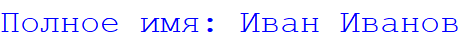

Python |
Содержание |
Уроки по изучению языка программирования Python |
||||||||||||||||||
Введение в написание программПрограмма на языке Python состоит из набора инструкций. Каждая инструкция помещается на новую строку. Например:
Большую роль в Python играют отступы. Неправильно поставленный отступ фактически является ошибкой. Например, в следующем случае мы получим ошибку, хотя код будет практически аналогичен приведенному выше:
Поэтому стоит помещать новые инструкции сначала строки. В этом одно из важных отличий пайтона от других языков программирования, как C# или Java. Однако стоит учитывать, что некоторые конструкции языка могут состоять из нескольких строк. Например, условная конструкция if:
В данном случае если 1 меньше 2, то выводится строка "Hello". И здесь уже должен быть отступ, так как инструкция print("Hello") используется не сама по себе, а как часть условной конструкции if. Причем отступ, согласно руководству по оформлению кода, желательно делать из такого количество пробелов, которое кратно 4 (то есть 4, 8, 16 и т.д.) Хотя если отступов будет не 4, а 5, то программа также будет работать. Таких конструкций не так много, поэтому особой путаницы по поводу где надо, а где не надо ставить пробелы, не должно возникнуть. РегистрозависимостьPython - регистрозависимый язык, поэтому выражения print и Print или PRINT представляют разные выражения. И если вместо метода print для вывода на консоль мы попробуем использовать метод Print: то у нас ничего не получится.
КомментарииДля отметки, что делает тот или иной участок кода, применяются комментарии. При трансляции и выполнении программы интерпретатор игнорирует комментарии, поэтому они не оказывают никакого влияния на работу программы. Например: Строчные коментарии предваряются знаком решетки - #.
Основные функцииPython предоставляет ряд встроенных функций. Некоторые из них используются очень часто, особенно на начальных этапах изучения языка, поэтому рассмотрим их. Основной функцией для вывода информации на консоль является функция print(). В качестве аргумента в эту функцию передается строка, которую мы хотим вывести:
Если же нам необходимо вывести несколько значений на консоль, то мы можем передать их в функцию print через запятую:
В итоге все переданные значения склеятся через пробелы в одну строку: Если функция print отвечает за вывод, то функция input отвечает за ввод информации. В качестве необязательного параметра эта функция принимает приглашение к вводу и возвращает введенную строку, которую мы можем сохранить в переменную:
Консольный вывод
|